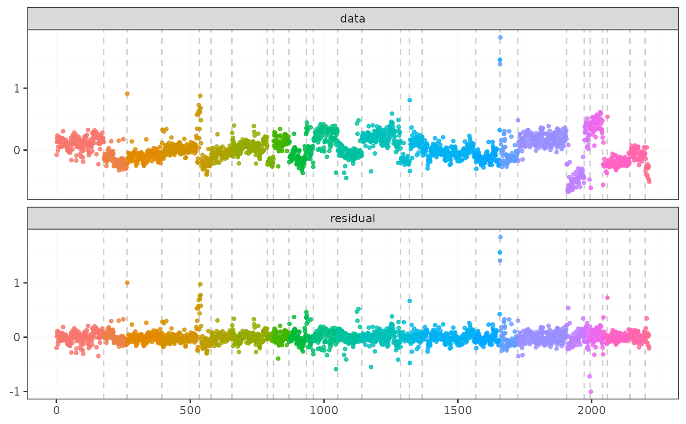

Transcription Profiling of 57 Human Bladder Carcinoma Samples
Source:R/fastcpd-data.R
transcriptome.RdTranscriptome analysis of 57 bladder carcinomas on Affymetrix HG-U95A and HG-U95Av2 microarrays
Format
A data frame with 2215 rows and 43 variables:
- 3
Individual 3
- 4
Individual 4
- 5
Individual 5
- 6
Individual 6
- 7
Individual 7
- 8
Individual 8
- 9
Individual 9
- 10
Individual 10
- 14
Individual 14
- 15
Individual 15
- 16
Individual 16
- 17
Individual 17
- 18
Individual 18
- 19
Individual 19
- 21
Individual 21
- 22
Individual 22
- 24
Individual 24
- 26
Individual 26
- 28
Individual 28
- 30
Individual 30
- 31
Individual 31
- 33
Individual 33
- 34
Individual 34
- 35
Individual 35
- 36
Individual 36
- 37
Individual 37
- 38
Individual 38
- 39
Individual 39
- 40
Individual 40
- 41
Individual 41
- 42
Individual 42
- 43
Individual 43
- 44
Individual 44
- 45
Individual 45
- 46
Individual 46
- 47
Individual 47
- 48
Individual 48
- 49
Individual 49
- 50
Individual 50
- 51
Individual 51
- 53
Individual 53
- 54
Individual 54
- 57
Individual 57
Source
<https://www.ebi.ac.uk/biostudies/arrayexpress/studies/E-TABM-147>
<https://github.com/cran/ecp/tree/master/data>
Examples
result <- fastcpd.mean(transcriptome[, 8], trim = 0.005)
summary(result)
#>
#> Call:
#> fastcpd.mean(data = transcriptome[, 8], trim = 0.005)
#>
#> Change points:
#> 135 177 264 394 531 579 656 788 811 869 934 966 1051 1141 1253 1286 1319 1368 1568 1657 1674 1724 1906 1972 1994 2041 2058 2146 2200
#>
#> Cost values:
#> -123.5927 -36.84151 -76.43524 -99.99815 -93.25738 124.9252 -82.00154 -114.4328 -27.55172 -52.20227 -38.54839 -4.867881 -51.65187 -62.50942 -95.41077 -5.905934 -36.72852 -20.10413 -189.8463 15.47117 179.8788 -38.76667 -160.4592 -36.74628 8.829873 5.00892 -10.69375 -77.49223 -56.31547 -8.314637
plot(result)
